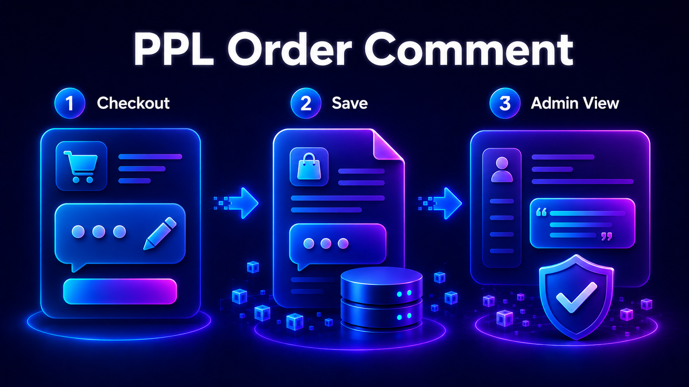

Customer notes
Capture order-specific notes during checkout without forcing customers into support emails.
Add a clear checkout note field so customers can leave delivery, handling or internal follow-up information that remains attached to the order in the Magento admin.

Capture order-specific notes during checkout without forcing customers into support emails.
Keep the note with the order where fulfillment or service teams can see it.
A focused checkout module that does one job instead of requiring a large checkout customization.